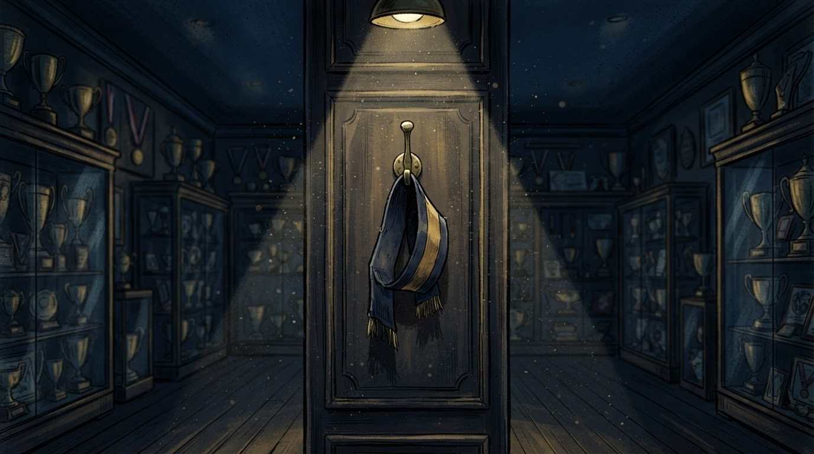

Sport
Gazeta Satirike e Kosovës dhe Shqipërisë — lajme që nuk duhet t'i besoni, por i lexoni gjithsesi
Bandela mbetet bosh, salla e trofeve mbetet e njëjtë, por departamenti ynë i matematikës sportive tashmë ka nxjerrë formulën: 1 kapiten - 0 zëvendësim = 3 komunikata për shtyp.

Kapiteni i Kombëtares së Kosovës ka njoftuar pensionimin, duke akuzuar udhëheqjen e federatës: "Pas 10 viteve në Kombëtare... nuk do të jem më pjesë e Kombëtares së Kosovës, përderisa FFK-në e udhëheqin personat aktualë." Federata ende nuk ka reaguar.
Burimi: Telegrafi — 11 shtator 2026
Sipas burimeve tona (dy tifozë dhe një portier rezervë që nuk luan që nga 2021), kapiteni ka lënë pas vetes një zbrazëti që nuk mund ta mbushë asnjë fanellë e re, sado e madhe të printohet numri mbi të.
Federata, e njohur për shpejtësinë e saj proverbiale në vendimmarrje, ka njoftuar se do të "analizojë situatën me kujdesin maksimal" — proces që, sipas kalendarit të brendshëm, mund të zgjasë deri në sezonin e ardhshëm, ose deri sa dikush të gjejë kyçin e sallës së mbledhjeve.
"Ne e respektojmë vendimin e kapitenit, ashtu siç respektojmë çdo vendim që s'na kushton asgjë ta respektojmë." — një zëdhënës i federatës, duke shkruar deklaratën në telefon, në makinë, në semafor
Departamenti ynë i analizave (një grafik në Excel dhe një top futbolli të shpuar) ka llogaritur se çdo largim kapiteni prodhon mesatarisht 4 konferenca për shtyp, 2 video-mesazhe emocionale dhe 0 zgjidhje strukturore. Formula është testuar, funksionon në çdo sport dhe në çdo dekadë.
Ndërkohë, kandidatët e mundshëm për bandelë të re thonë se janë "të hapur ndaj bisedimeve" — term sportiv që, sipas fjalorit tonë, përkthehet "presim t'na thërrasin, por jo publikisht".
Deri atëherë, bandela e kapitenit pritet të qëndrojë në një vitrinë, e ndriçuar nga poshtë, si kujtim i epokës kur dikush kishte guximin t'i thoshte diçka federatës me zë të lartë.